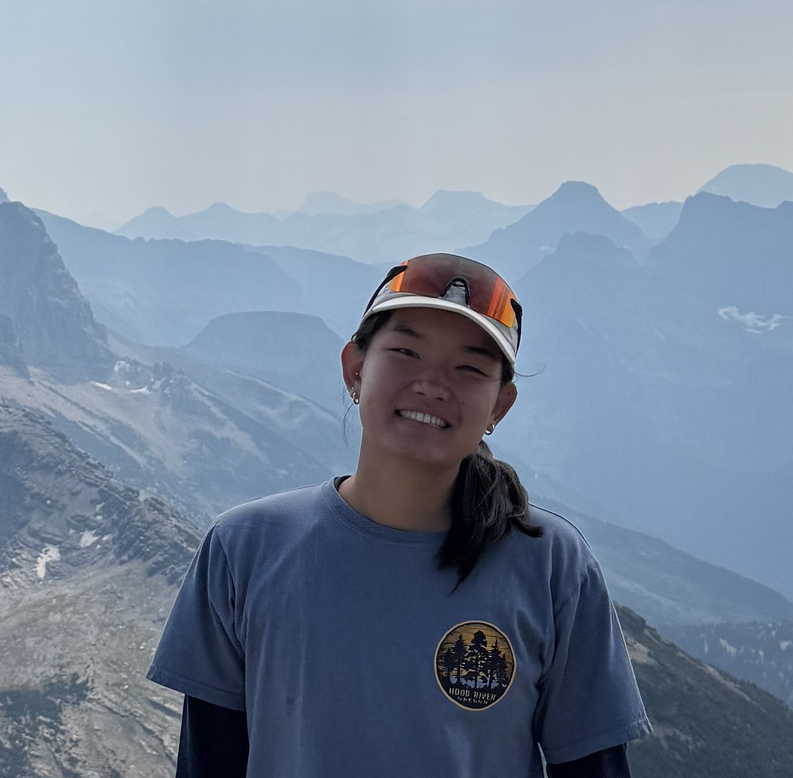

About Me
Maya Stelzer, Computer Science Student

Hi, I'm Maya Stelzer, a senior at Gonzaga University studying Computer Science. I'm a passionate software engineer interested in building software that solves real-world problems, especially projects related to the outdoors and the environment. With a strong foundation in Java, C#, Python, C++, and SQL, I enjoy making practical, impactful, creative solutions that blend technology with the natural world.
Core Skills
- Data Structures and Algorithms
- Software Development
- Database Management
- Java
- C#
- Python
- C++
- SQL